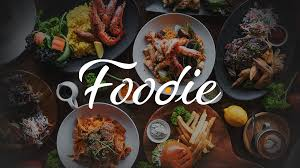

Welcome to my corner of the cinematic world! Here, I celebrate the stars who light up the silver screen and captivate audiences with their incredible talent and charisma. These actors and actresses have left an indelible mark on the film industry and my heart
Celebrating cricketing legends
Welcome to my cricketing haven, where we pay tribute to the masters of the game who have mesmerized us with their extraordinary skills and indomitable spirit. Here, you'll find an ode to my favorite cricketers—those whose performances on the field have not only set records but also captured our hearts
A Culinary delight
There's something truly special about the foods that make our taste buds dance and our hearts sing.In this exploration, I’ll dive into what makes this food so exceptional and why it holds a cherished place in my heart and on my plate.